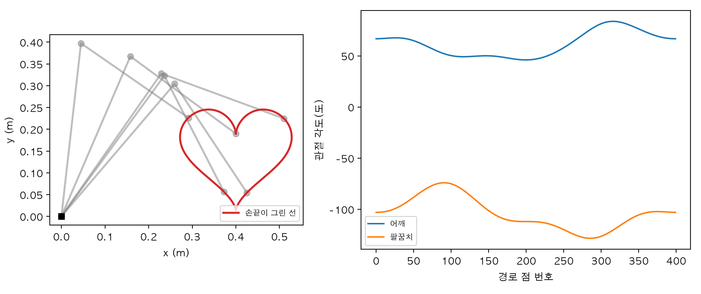
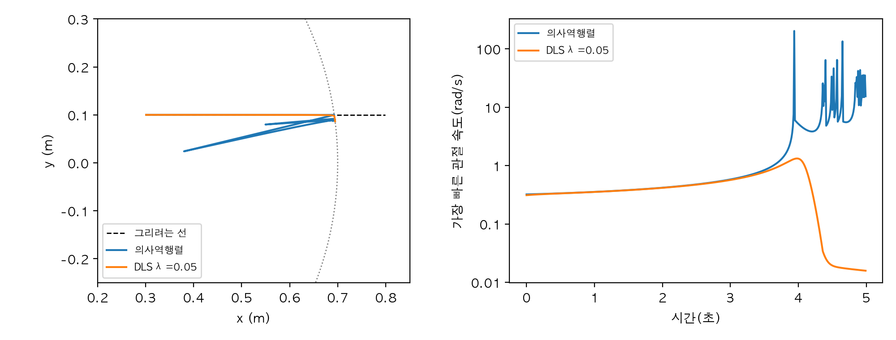

종이에 하트를 그린다고 합시다. 손은 펜을 놓지 않고 한 번에 이어서 움직입니다. 로봇도 같습니다. 손끝이 점을 하나씩 찍는 것만으로는 그림이 되지 않고, 점과 점 사이가 끊기지 않아야 합니다. 이번 시간에는 경로를 따라가는 일이 자세 하나를 맞추는 일과 무엇이 다른지 봅니다.
코드 블록을 내 컴퓨터에서 돌리는 방법은 예제 실행하기에 있습니다.
바로 전 자세를 다음 점의 출발점으로 씁니다

경로는 목표점의 목록입니다. 교안은 하트 곡선을 400개 점으로 나눕니다. 폭이 약 0.26m이므로 이웃한 두 점 사이는 평균 2mm 남짓입니다. 하트 전체는 어깨에서 (0.4, 0.15)m 지점에 놓여 있고, 가장 먼 점까지의 거리가 0.562m라서 팔 길이 0.7m 안에 넉넉히 들어옵니다.
첫 점만 해석적 IK로 풉니다. 코사인 법칙으로 두 후보가 나오므로 그중 팔꿈치를 위로 든 해를 고릅니다. 두 번째 점부터는 방금 쓴 관절각을 그대로 출발점으로 씁니다.
q = analytic_ik(path[0])[0] # 첫 점만 해석해, 팔꿈치 위
for target in path:
for _ in range(3): # 이웃 점이 가까우니 세 번이면 충분
J = jacobian(q)
q += J.T @ np.linalg.solve(J @ J.T + 0.01**2*np.eye(2), target - fk(q))왜 이렇게 하는지가 이 페이지의 핵심입니다. 이웃 점이 2mm 떨어져 있으면, 지금 자세에서의 직선 근사가 그 2mm 구간에서는 거의 정확합니다. 그래서 세 번의 보정으로 충분합니다. 06차시에서 걸음이 크면 근사가 깨져 오차가 오히려 커졌던 것과 같은 원리이고, 여기서는 걸음이 작아서 유리한 경우입니다.
두 번째 이유는 가지(branch)입니다. 매 점마다 임의의 초기값에서 다시 시작하면, 어떤 점에서는 팔꿈치 위 해를, 다음 점에서는 아래 해를 골라도 각 점의 목표는 다 맞출 수 있습니다. 하지만 그 사이에서 팔이 갑자기 뒤집힙니다. 손끝만 보면 성공이고 로봇은 실패입니다. 앞 점의 답에서 출발하면 같은 가지에 머물러 관절 곡선이 매끄럽게 이어집니다.
400개 점 전체에서 가장 큰 손끝 오차는 6.5×10−11m였고, 어깨는 46.0~83.7°, 팔꿈치는 −128.4~−74.0° 사이를 오갔습니다. 이 수치는 이 간격, 이 경로, 이 시작점, λ=0.01, 점당 3회라는 조건에서의 결과입니다. “세 번이면 모든 경로가 정확하다”로 일반화하면 안 됩니다. 점 간격을 2cm로 넓히면 같은 세 번으로 충분한지 오차를 다시 검사해야 합니다.
닿지 않는 선은 좋은 알고리즘도 끝까지 따라갈 수 없습니다

이번 경로는 일부러 곤란하게 골랐습니다. (0.3, 0.1)m에서 x방향으로 0.1m/s로 5초 동안 곧게 나아가면 끝은 x≈0.8m입니다. 링크 합이 0.7m이므로 경로 자체에 도달 불가능한 구간이 있습니다. 어떤 알고리즘을 써도 이 선 전체를 그릴 수는 없습니다.
이번에는 점마다 IK를 끝까지 푸는 대신, 실제 제어기처럼 0.01초마다 관절 속도를 정합니다. 이렇게 속도 단계에서 푸는 방식을 속도 기반 역기구학이라고 부릅니다. 원하는 손끝 속도는 두 부분의 합입니다. 선을 따라가는 속도, 그리고 밀린 만큼을 메우는 속도입니다.
q̇ = Jᵀ(JJᵀ + λ²I)⁻¹ v
두 번째 식이 07차시의 DLS입니다. λ=0으로 두면 의사역행렬과 같은 역할을 합니다. 같은 경로를 두 방법으로 따라가 봅니다.
| 방법 | 가장 빠른 관절 속도 | 선(y=0.1)에서 최대 이탈 |
|---|---|---|
| 의사역행렬 (λ=0) | 202.7rad/s | 76.1mm |
| DLS λ=0.05 | 1.3rad/s | 13.4mm |
처음 3초 남짓은 두 방법이 똑같이 선을 잘 따라갑니다. 갈라지는 지점은 팔이 거의 펴질 때, 약 3.9초입니다. 의사역행렬은 원하는 속도를 끝까지 내려고 관절 속도를 202.7rad/s까지 끌어올립니다. 1초에 32바퀴입니다. 그 뒤로는 계산이 튀면서 손끝이 선에서 76.1mm 벗어납니다. 실제 팔이었다면 모터가 한계에 걸리거나 주변을 쳤을 것입니다.
이 실험에서 DLS의 최대 관절 속도는 약 1.3rad/s였습니다. 속도를 그 값으로 잘라 내는 제한기가 있는 것은 아닙니다. 더 나아가기를 포기하고, 닿을 수 있는 원 위에서 목표에 가장 가까운 점에 머뭅니다.
마지막 목표 (0.8, 0.1)에 가장 가까운 원 위의 점이 (0.695, 0.087) 근처라서 선보다 조금 아래에 있습니다. DLS가 불가능한 목표를 가능하게 만든 것이 아닙니다. 의사역행렬은 위험하게 실패하고, DLS는 얌전하게 실패합니다. 그 차이가 로봇을 살립니다.
그래프를 읽을 때 주의할 두 가지
표의 “선에서 이탈”은 |y − 0.1|입니다. 이 값이 작아도 목표보다 x방향으로 뒤처질 수 있습니다. 전체 목표 오차 √(Δx²+Δy²)와 같지 않으므로, 성공 판정에는 두 성분을 함께 봐야 합니다. 11차시 전이 문제가 바로 이 구분을 묻습니다.
오른쪽 그래프의 세로축은 로그 눈금이고, 값은 두 관절 속도 중 절댓값이 큰 쪽입니다. 속도 벡터 자체가 아니라 그 최대 성분이라는 뜻입니다. λ=0인 경우는 Jᵀ(JJᵀ)⁻¹을 쓰므로 비특이 구간에서는 의사역행렬과 같지만, 정확한 특이점에서는 행렬이 풀리지 않을 수 있습니다.
내 컴퓨터에서 돌려 보기
아래 출력은 이 컴퓨터(MuJoCo 3.17.0)에서 오너의 예제를 직접 돌려 얻은 값입니다. 명령은 줄 두 개(폴더로 이동 + 실행)이고 예제 실행하기에 이유가 있습니다. 그림 파일을 저장하는 예제는 예제 폴더에 PNG가 생기지 않도록 임시 폴더(cd $env:TEMP)에서 전체 경로로 돌립니다.
b25_draw_heart.py · 하트 400점을 3회씩 풀어 그리기
cd $env:TEMP
C:\code\src\robo\.venv\Scripts\python.exe C:\code\src\robo\vol3\03-kinematics\b25_draw_heart.py경로 점 400개, 가장 큰 손끝 오차 6.5e-11m
어깨 46.0~83.7도, 팔꿈치 -128.4~-74.0도
저장: draw_heart.png읽을 곳: 8~10행이 하트 곡선, 11행이 (0.4, 0.15)로 옮기는 줄, 15~19행이 점마다 3번 고치는 DLS 루프(λ=0.01)입니다. 그림은 draw_heart.png로 저장됩니다.
b26_draw_line.py · 특이점으로 달리는 직선: 의사역행렬 vs DLS
cd $env:TEMP
C:\code\src\robo\.venv\Scripts\python.exe C:\code\src\robo\vol3\03-kinematics\b26_draw_line.py의사역행렬: 가장 빠른 관절 속도 202.7rad/s, 선(y = 0.1)에서 가장 멀리 벗어난 거리 76.1mm
DLS λ=0.05: 가장 빠른 관절 속도 1.3rad/s, 선(y = 0.1)에서 가장 멀리 벗어난 거리 13.4mm
저장: draw_line.png읽을 곳: 9~12행이 0.01초 주기와 (0.3, 0.1)에서 x쪽 0.1m/s인 선, 20~23행이 한 걸음(원하는 속도 + 5×남은 오차 → 관절 속도), 32~35행이 두 방법을 돌려 가장 빠른 관절 속도와 선에서의 이탈을 출력합니다.
선택 · 배운 뒤 스스로 확인
초기값 전략과, 링크 길이로 정해지는 한계
여기까지 읽은 뒤에 확인해 보세요. 첫 문제는 경로를 따라갈 때 초기값을 어떻게 잡는지, 둘째 문제는 목표가 링크 길이 밖에 있을 때 최소 얼마나 못 미치는지를 숫자로 묻습니다.
연습 두 문제 펼치기
둘째 문제는 알고리즘을 바꿔 해결할 수 있는 종류가 아닙니다. 무엇을 바꿔야 하는지 먼저 말해 보세요.
수업 근거 / 원문 보기
교안 p.37 · draw_heart.png, b25_draw_heart.py
교안 p.38 · b26_draw_line.py의 목표·오차 정의 대조
강의 교안 PDF p.37~38(하트 그리기, 특이점을 지나는 직선 추종)을 교과서 3.10절과 하나의 설명으로 합쳤습니다. 교과서의 “첫 점만 해석해, 나머지는 앞 점에서 출발” 요령과 “경로는 작업 공간 안쪽·특이점에서 떨어진 곳에” 교훈을 본문에 흡수했습니다.
- 교과서 캐시: PDF 파일 141쪽 · PDF 파일 146쪽 · 3장 원고 전체
- 수치 구분: 6.5×10−11m, 46.0~83.7° / −128.4~−74.0°, 202.7rad/s·76.1mm 및 1.3rad/s·13.4mm는 오너의
b25_draw_heart.py와b26_draw_line.py를 이 컴퓨터에서 돌려 확인했습니다(교안과 같음). 점 간격(평균 약 2mm), 하트 최대 반경 0.562m, 33바퀴 환산은 같은 경로 식으로 계산한 값입니다. - 도해:
assets/day2-draw_heart.png,assets/day2-draw_line.png— 원고 3.10절 그림입니다.